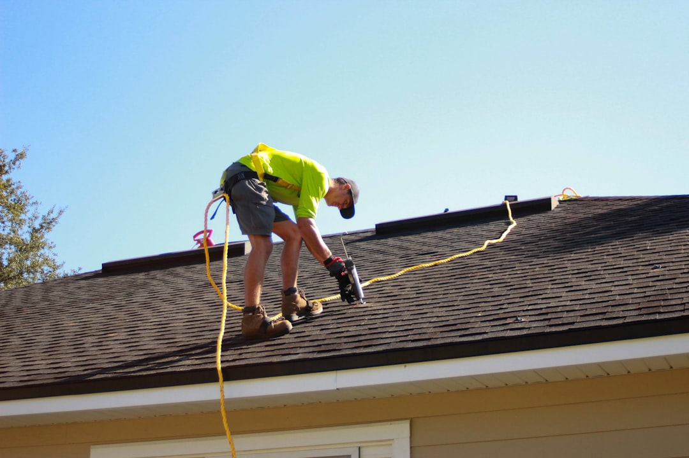

A Tampa roofing decision should start with observable facts, not a product choice. The published guidance asks homeowners to record the property location, visible issue, water entry, roof covering if known, approximate age, previous repairs and access notes. It also names asphalt shingles, metal roofing and tile roofing, and four early checks: verify the contractor through Florida DBPR, compare the written scope line by line, confirm permit responsibility and ask for findings before commitment.
For homeowners comparing roofing services tampa options, the useful starting point is a written condition record that separates observed roof facts from repair, replacement and inspection assumptions.
Roofing Services Tampa Explained
Roof Contractor Tampa frames the first decision around condition: what is visible, where water may be entering, and whether the next step is repair, inspection or replacement. That order suits a Tampa roof question because a ceiling mark, displaced shingle or ageing roof does not explain the full scope on its own.
The enquiry details requested in the published guidance are the useful basics: property location, visible issue, whether water is entering, roof covering if known, approximate age, when the issue began, previous repairs, access and nearby structures. Those inputs help a provider decide what still needs confirmation on site.
- Use photos only where they can be taken safely and when a provider asks for them.
- Keep condition notes separate from insurance, warranty or sales conclusions.
- Ask for observed findings before accepting a repair only or replacement only answer.
Repair, inspection or replacement
Repair is most useful when the likely water path and repair area can be described clearly. The guidance points to coverings, flashing, valleys and penetrations as places that may need to be followed before the scope is defined. A narrow repair estimate should still state what is included and what is excluded.
An inspection should record what can be observed and what remains hidden. That distinction matters where underlayment, roof decking or flashing may affect the decision but cannot be judged from the ground. A sales only conclusion is weaker than a finding that explains why further investigation, repair or replacement is being recommended.
Replacement needs a broader quote. The published guidance says to compare tear off, deck allowances, underlayment, ventilation, flashing, permits, cleanup and warranties as one assembly. Readers focused on a smaller active leak can also compare the related Tampa roof repair guide before deciding whether a full replacement conversation is premature.
What to compare in a written estimate
A written roofing estimate is easier to compare when it names the same work layers. Material labels alone are not enough. Asphalt shingle, metal and tile options each sit above supporting parts of the roof assembly, and the published guidance separates the covering from the layers beneath it.
Ask the provider to identify the roof covering, the underlayment approach, flashing work, ventilation assumptions, deck allowance, cleanup process and warranty conditions. For metal roofing, a useful quote names the system, fasteners, penetrations, edges and warranty conditions. For tile roofing, appearance alone does not show the condition of the water shedding layers beneath it.
Cleanup should be written into the scope, not handled as a casual promise. The reference topics include a magnetic nail sweep, which is the kind of detail that helps a homeowner compare two similar looking estimates without relying on a headline price alone.
Permit and contractor checks
The published guidance tells readers to verify the contracting business through Florida DBPR before signing. That is a verification step, not a guarantee of workmanship. It helps confirm that the contracting business being considered has a current Florida licence and scope that should be checked against the work being proposed.
Permit responsibility should also be confirmed in writing. The property jurisdiction and work scope determine the permit and inspection route, so the estimate should say who is responsible for that process. In Tampa, that question belongs in the written comparison before work is accepted.
- Ask which business name will appear on the paperwork.
- Ask who handles the roofing permit if one is required for the final scope.
- Ask how inspection findings will be documented before repair or replacement is approved.
- Ask whether historic district or HOA checks could affect materials, timing or visible changes.
Who this applies to
This guide is for Tampa homeowners who have a visible roof issue, an ageing covering, storm damage concerns or a written estimate they need to compare. It is also useful for owners who know the roof type but do not yet know whether the supporting assembly, including decking, underlayment, flashing and ventilation, changes the next decision.
It is less useful for someone seeking a remote diagnosis. The published guidance is clear that the site cannot inspect the roof or lend a future provider its credentials. Its practical role is to help organise the property facts, provider questions and written scope before commitment.
For storm damage, keep safe observation and condition evidence separate from insurance decisions. Water entry comes first, followed by the condition record and a scope that can be compared without treating the insurance conversation as the roofing diagnosis.
- Record the symptoms. Write down the visible issue, when it began, whether water is entering and any previous repairs.
- Identify the roof basics. Note the roof covering if known, approximate age, access constraints and nearby structures.
- Ask for findings. Request an explanation of what was observed and why repair, replacement or further investigation is recommended.
- Compare the scope. Review materials, layers, deck allowance, flashing, ventilation, cleanup, exclusions and warranties line by line.
- Confirm responsibility. Verify the contractor through Florida DBPR and put permit responsibility in writing before signing.
| Path | Use when | Ask for |
|---|---|---|
| Repair | The issue appears localised and the likely water path can be described. | Repair area, exclusions, flashing or penetration details and findings. |
| Inspection | The visible symptom does not explain the full condition. | Observed items, hidden limitations and the next decision. |
| Replacement | The roof assembly needs a broader written comparison. | Tear off, deck allowance, underlayment, ventilation, permits, cleanup and warranty terms. |
Common questions
Should I repair or replace a Tampa roof? The published guidance says the answer depends on where the damage is, how widespread it is, the roof covering and the condition of the deck, flashing and underlayment. Ask for findings and both viable scopes in writing when the decision is not obvious.
What details should I send with a roofing enquiry? Include the property location, visible issue, whether water is entering, roof covering if known, approximate age, when the issue began, previous repairs and access notes. Photos can be provided later if a provider asks for them.
Does a Tampa roofing estimate need permit details? The guide recommends confirming permit responsibility in writing. The property jurisdiction and work scope determine the permit and inspection route, so the final estimate should make responsibility clear.
How can two roofing quotes be compared fairly? Compare the same roof scope line by line. Materials, layers, deck allowance, flashing, ventilation, cleanup, exclusions and warranty conditions should be clear enough to test one estimate against another.
This guide covers Tampa roof repair, inspection, replacement, quote comparison, permit responsibility and contractor verification questions.